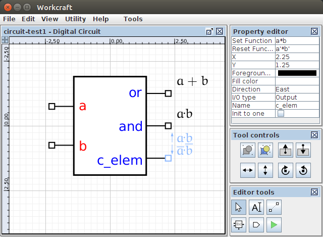

Table of Contents
Digital Circuit plugin
Familiarise yourself with Workcraft interface to learn its common features that are available for all plugins.
This plugin is intended for capturing, simulation and verification of asynchronous digital circuits. For simulation and verification the circuit is automatically translated into a Signal Transition Graph (STG) that allows re-using the features of the STG plugin.
Capturing
In order to create a circuit model choose File→Create work… menu item. In the New work dialogue box select Digital Circuit as the model type. You may also want to give the work a meaningful name, e.g. circuit-test1, otherwise it will be created under Untitled name. Click OK or press Enter to create the work.

Functional components
The main building blocks of a digital circuit are functional components that can be created with the function generator ![[F] Function](editor_tools-function.png "[F] Function") . Initially a generated component has only a single output pin with neither set nor reset functions assigned.
. Initially a generated component has only a single output pin with neither set nor reset functions assigned.

The set/reset functions should be specified by selecting the output pin and entering the corresponding Boolean expressions in the Set Function and Reset Function entries of the property editor. New pins can be added through the Add function item of the popup menu that is accessible by right-clicking the component.

By default the created pins are of Output type. This be changed to Input in the property editor - see I/O type entry. However, explicitly creating input pins is usually not required. When a set or reset function is entered for an output pin, the input pins are automatically created for all the literals in the Boolean expressions. Note that the input pins do not disappear if they become unneeded after modification of the set/reset functions. You may need to manually remove those pins by first selecting them and then pressing Delete button.
A component visualisation is defined by its render type selected in the property editor, as follows:
- Box – the component is visualises as a box with explicitly named pins and their set and reset functions rendered next to them. This render type is convenient when a component has more than one output or its set/reset functions are too complex.
- Gate – the set and reset of a single component output are visualised using the traditional graphical mnemonics for Boolean operations. If a single function is specified, then the other is assumed to be complimentary and the component is rendered as a combinational gate (possibly with several layers of logic). If both functions are specified then the component is rendered as a C-element. The obtained result is free of textual information (even the pins are not labelled) and therefore is usually easier to comprehend. Rendering a component as gate is convenient when it has a single output with relatively simple set/reset functions.

Input and output ports
Other building blocks of a digital circuit are its primary input and output ports. These are used to interact with the circuit environment. The ports are created with the port generator ![[P] Input/Output port](editor_tools-port.png "[P] Input/Output port") - just activate this editor tool and click the editor panel in a position you want to place the port. By default an output port is created, however, if you hold Shift while clicking the editor panel then an input port is created. Note that you can change the of existing port I/O type in the property editor too.
- just activate this editor tool and click the editor panel in a position you want to place the port. By default an output port is created, however, if you hold Shift while clicking the editor panel then an input port is created. Note that you can change the of existing port I/O type in the property editor too.

Connections
When the connection tool ![[C] Connect](editor_tools-connect.png "[C] Connect") is active you can connect the pins of the circuit components and primary ports. The output pins and the input ports can be connected either to the input pins or to the output ports. Several connections may start at the same output pin or an input port, however, only a single connection can end up at an input pin or an output port. If an incorrect connection is attempted (e.g. a connection from an input pin to an output port or more than one connections to an input pin) then a warning message will be issued.
is active you can connect the pins of the circuit components and primary ports. The output pins and the input ports can be connected either to the input pins or to the output ports. Several connections may start at the same output pin or an input port, however, only a single connection can end up at an input pin or an output port. If an incorrect connection is attempted (e.g. a connection from an input pin to an output port or more than one connections to an input pin) then a warning message will be issued.

In order to reduce the number of arcs going from the same output pin (or an input port) and simplify the layout of the connection arc, a joint node is introduced. It can be created with a joint generator and acts as a fork, i.e. it allows one incoming connection and multiple outgoing connections.

Editing
For editing the model activate the selection tool ![[S] Select](editor_tools-select.png "[S] Select") . All the standard editing features (select, drag-and-drop, delete, copy, undo, group, etc.) work the same - see generic help on Selection controls and Property editor for details.
. All the standard editing features (select, drag-and-drop, delete, copy, undo, group, etc.) work the same - see generic help on Selection controls and Property editor for details.
Similar to all the other models, textual comments can be created by activating the ![[N] Text Note](editor_tools-text_note.png "[N] Text Note") tool and clicking the editor panel in the position you want to put the text. Double-click on the note box to edit its text label in-place or do it through the property editor panel when the note is selected.
tool and clicking the editor panel in the position you want to put the text. Double-click on the note box to edit its text label in-place or do it through the property editor panel when the note is selected.
Simulation
For simulation of a Digital Circuit model activate the simulation tool ![[M] Simulate](editor_tools-simulate.png "[M] Simulate") . The enabled pins and ports are highlighted and can be activated by clicking them. The simulation tool controls provide the means for analysis and navigation through the simulation trace, see generic help on Simulation controls for details.
. The enabled pins and ports are highlighted and can be activated by clicking them. The simulation tool controls provide the means for analysis and navigation through the simulation trace, see generic help on Simulation controls for details.
The circuit simulation is just an abstraction over the simulation of an automatically generated STG representation of the circuit components. Therefore all the specifics of STG simulation also apply to the Digital Circuit plugin.
Verification
Verification of a digital circuit is usually made in the context of its environment. The environment can be described as an STG and attached to the circuit model using the property editor when no nodes are selected.
When a verification task is issued via the Tools→Verification menu, the circuit is first translated into an STG that is subsequently composed with the STG of the environment. The resultant STG is used for verification of the desired properties:
- Conformation [MPSat] - verify if the circuit conforms to the environment specification.
- Deadlock [MPSat] - verify if the circuit is deadlock-free.
- Hazard [MPSat] - verify if the circuit is hazard-free.
- Conformation, deadlock and hazard (reuse unfolding) [MPSat] - verify if the circuit conforms to the environment specification and is free of deadlocks and hazards under the given environment.